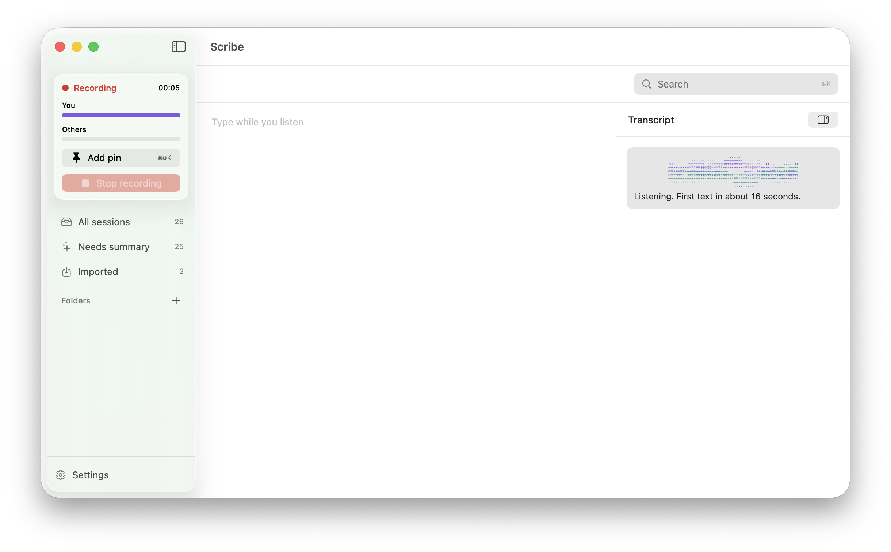
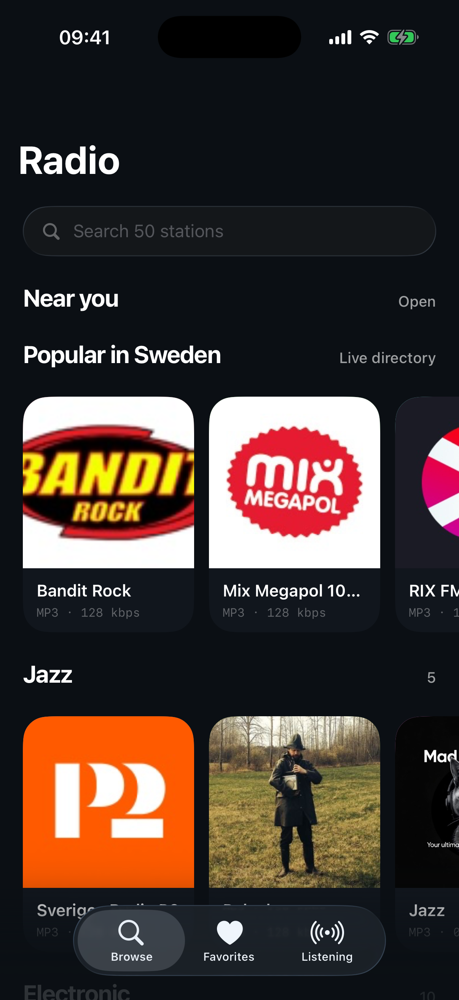
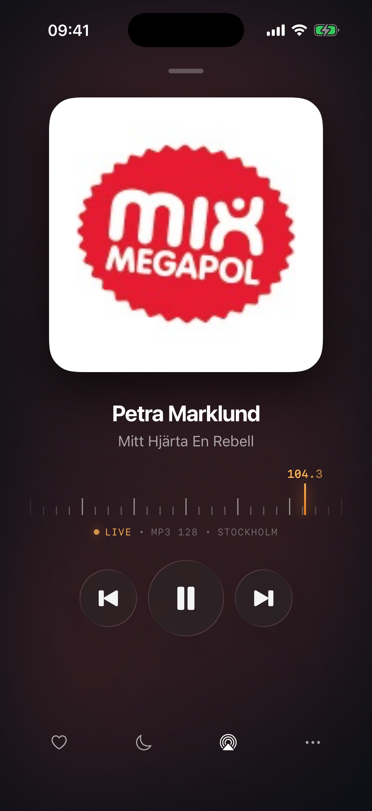

Research före säkerhet
Intervjuer, syntes, kartläggning av användarresor, wireframes och tester där deltagarna tänker högt ersätter antaganden med något som går att observera.
Jag studerar just nu på programmet Product Manager vid Hyper Island och kombinerar research, strategi, erfarenhet som företagare och praktisk produktutveckling.
Nu och tidigare
Utvalda projekt
Ett researchbaserat koncept och två fungerande produkter. Den gemensamma nämnaren är att definiera vad färdigt betyder och sedan kontrollera resultatet mot verkliga människor och verkliga förhållanden.
UX research · Koncept · 2026
En diegetisk följeslagare för nya spelare i Escape from Tarkov, formad genom åtta intervjuer, en researchmatris och fyra vyer i wireframeformat.

macOS · Fungerande app · 2026
En mötesinspelare som bearbetar allt lokalt. Den byggdes genom specifikationer, agenter baserade på AI och manuell verifiering. Trots det missade 283 godkända tester fyra verkliga fel.


iOS · Fungerande bygge · 2026
En internetradiospelare som avgränsades, byggdes, granskades oberoende och installerades på en fysisk telefon under en arbetsdag.
Så arbetar jag
Produktarbete är att avgöra vad som förtjänar att finnas, synliggöra konkurrerande prioriteringar och hitta evidens som är stark nog att ändra ens uppfattning.
Intervjuer, syntes, kartläggning av användarresor, wireframes och tester där deltagarna tänker högt ersätter antaganden med något som går att observera.
Tretton år i ett reglerat tjänsteföretag lärde mig att knyta samman krav, verksamhet, intressenter och ofullständig information.
Jag använder verktyg baserade på AI varje dag och utgår från att trovärdiga resultat ändå måste kontrolleras. Granskningen är en del av produktarbetet.
Erfarenhet som grundare
Långt innan jag kallade det produktledning handlade arbetet ändå om system, konkurrerande prioriteringar, intressenters behov, kvalitet och att besluta vad som händer härnäst.
Konduko AB · 2012 till 2025
Byggde och ledde ett specialistföretag för vårdbemanning inom svensk offentlig hälso- och sjukvård. Utformade verksamhetssystemet som band samman upphandling, läkartillgänglighet, avtal, scheman, fakturering och kvalitetskontroll.
NiyaCare · 2011 till idag
Ett företag inom personlig assistans, byggt kring att matcha människor med assistenter de kan lita på. Ansvarar för att förstå individuella behov, tjänstekvalitet och den dagliga verksamheten.
Det är där jag lärde mig vad självständighet och tillit faktiskt kräver av en tjänst. Det är inte abstrakta värden. En person är beroende av dem varje dag.
Om mig
Före vården arbetade jag i tretton år med visuell kommunikation inom design, projektledning, varumärken, förpackningar och kundarbete. Jag presenterar inte detta som en aktuell designpraktik; det är bakgrunden som lärde mig att briefa tydligt och snabbt läsa en layout.